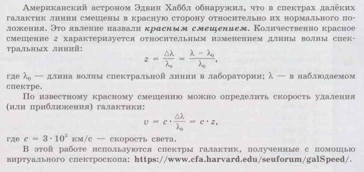
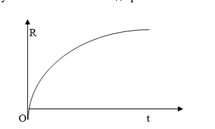
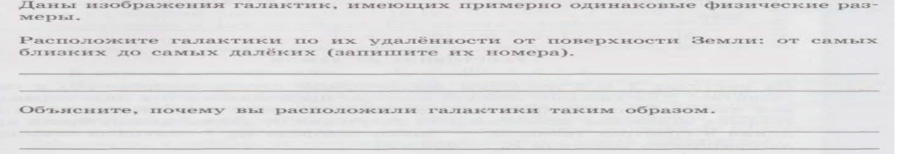
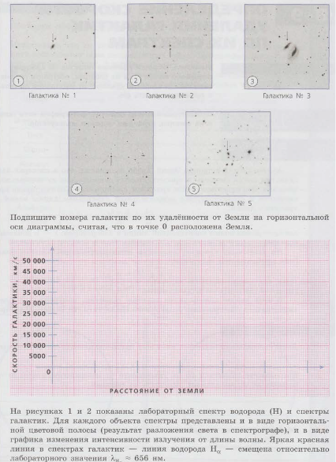
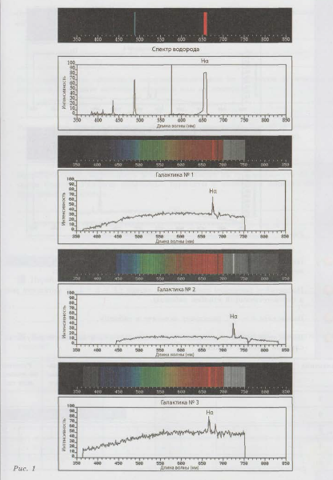
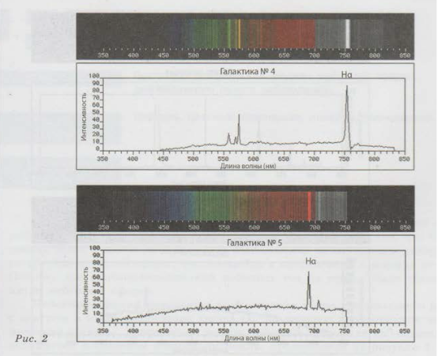

ОПРЕДЕЛЕНИЕ СКОРОСТИ УДАЛЕНИЯ ГАЛАКТИКИ ПО ЕЕ СПЕКТРАМ
🎯 Цель работы
Формирование осознания роли отечественной науки при изучении особенностей видимого годичного движения Солнца по небесной сфере, определение продолжительности дня и ночи на различных широтах.
📚 Краткие теоретические сведения
СС очки зрения механики, основными характеристиками Вселенной являются ее размер и его изменения во времени. Понятия «возраст» и «радиус» Вселенной на современном этапе космологии остаются условными и пока не доказанными опытным путем. Тем не менее они оказываются количественно оцениваемыми и указывают направление научных поисков. Основные выводы гипотезы Большого взрыва в плане динамики Вселенной, как, оказалось, могут быть получены на основе классической физики.
Основными космическими размерностями длины являются:
Астрономическая единица (среднее расстояние от Земли до Солнца): 1 а.е.≈ 150 млн.км=1,5 Х 10¹¹м.
Парсек (расстояние до космического объекта, при котором угловой размер длины в одну астрономическую единицу составляет одну секунду): 1 пс ≈ 3,09 Х 10¹³ км.
Световой год (расстояние в космосе, которое свет проходит за один земной год): 1 св.год ≈ 9,44 Х 10¹² км.
Закон Хаббла, открытый в 1929 г., гласит: все галактики во Вселенной удаляются друг от друга со скоростью, прямо пропорциональной расстоянию между галактиками:
V = H • L
где V – скорость разлета галактик; L – расстояние между галактиками; H – постоянная Хаббла (H = (50-100)км/с •Мпс.

ЗАДАНИЯ И ИНСТРУКЦИИ ПО ВЫПОЛНЕНИЮ
ЗАДАНИЕ 1
Зная соотношения космических размерностей длины, выразить постоянную Хаббла в единицах системы СИ.
Пользуясь законом Хаббла, определить расстояние до «горизонта» Вселенной, привязывая последний к краевым галактикам, удаляющимся со световой скоростью.
Определить «возраст» Вселенной из условной ретроспективы, что краевая галактика на протяжении истории Вселенной двигалась с постоянной скоростью из точки, давшей начало Вселенной.
Выведите основное уравнение динамики Вселенной, пользуясь классическим (ньютоновским) подходом. Считая Вселенную скоплением равномерно распределенных в пространстве материальных точек, каждая из которых обладает как кинетической энергией (за счет собственного движения), так и потенциальной (за счет притяжения ко всем остальным галактикам), запишем выражение для полной энергии краевой галактики:
Е=….
Считая Вселенную консервативной системой (т.е. сохраняющей во времени полную энергию) и рассматривая ее с позиций механистической картины мира, получите характеристики эволюции Вселенной при условии Е=0 ( из полного уравнения п.4 определяется V). Качественно график динамики R выглядит следующим образом (см. рис). Зарисуйте его и объясните ход кривой. Это так называемая модель критической Вселенной

Выражение для V представляет дифференциальное уравнение для R , которое имеет решение в аналитическом виде
dR/dt = √2γM/R = aR1/2, a=√(2γM)?
Интегрируя, получаем: 2/3R3/2=at+с
Задав R(0)=0, имеем R=At2/3, A=(9/2 γM)1/3
Начертите график алгебраической зависимости R(t) и убедитесь, что он повторяет вышеприведенный график.
ЗАДАНИЕ 2




Найдите линию водорода Hα в спектре каждой галактики и определите соответствующую длину волны λ. Результат занесите в таблицу.
Посчитайте смещение спектральной линии Δλ = λ - λH и запишите результат в соответствующий столбец таблицы.
Вычислите z=Δλ/λH, результат занесите в таблицу.
Вычислите скорость удаления галактики u = c • z и запишите результат в последний столбец таблицы.
Галактика
Длина волны λ₀ водорода в спектре галактики, нм
Смещение спектральной линии Δλ
Красное смещение z
Скорость удаления галактики u, км/с
Расстояние до галактики, млн св. лет
1
2
3
4
5
КОНТРОЛЬНЫЕ ВОПРОСЫ
Чем занимается наука космология?
Что называется космологическим красным смещением?
В чем состоит эффект Доплера?
Сформулируйте закон Хаббла.
Какие опытные факты являются в настоящее время свидетельством расширения Вселенной?